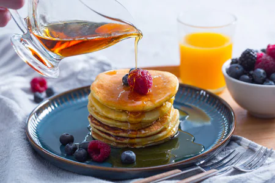

Maple syrup pancakes

A pancake (or hot-cake, griddlecake, or flapjack) is a flat cake, often thin and round, prepared from a starch-based batter that may contain eggs, milk and butter and cooked on a hot surface such as a griddle or frying pan, often frying with oil or butter. It is a type of batter bread. Archaeological evidence suggests that pancakes were probably eaten in prehistoric societies.
Ingredients
- 1 cup all-purpose flour
- 1-1/2 teaspoons baking powder
- 1/2 teaspoon salt
- 1 egg
- 1 cup 2% milk
- 2 tablespoons canola oil
- 1 tablespoon maple syrup
- Additional maple syrup
Directions
- In a small bowl, combine the flour, baking powder and salt. In another bowl, combine the egg, milk, oil and syrup; stir into dry ingredients just until blended.
- Pour batter by 1/4 cupfuls onto a lightly greased hot griddle; turn when bubbles form on top of pancakes. Cook until second side is golden brown (pancakes will be thin). Serve with additional syrup.
Thanks for the recipe to:Taste of home